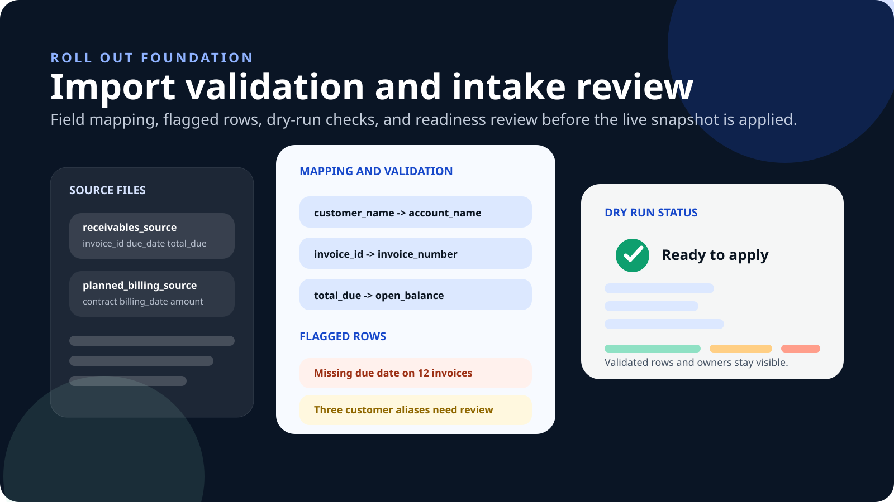

ERP and accounting systems
Turn invoice, customer, balance, due-date, payment, and owner data into one usable receivables workflow.
Ledgewave helps finance teams turn ERP exports, accounting data, or CSV uploads into a shared receivables workflow for prioritization, follow-up, and cash visibility.
Ledgewave is built for teams managing receivables across ERPs, accounting platforms, exports, and supporting customer data. Bring the right fields into one AR operating layer without disrupting your source systems.

Turn invoice, customer, balance, due-date, payment, and owner data into one usable receivables workflow.
Use approved exports or managed file drops when a direct integration is not the fastest path to launch.
Add CRM, billing, payment, and account-owner context so teams know who to contact, what to prioritize, and why.
CSV imports give finance teams a faster way to launch AR operations, validate field quality, and create a shared view of the book while longer-term automation is planned.

Check required fields, missing dates, duplicate customers, balance issues, and ownership gaps before receivables enter the workflow.
Once the file is clean, your team can prioritize accounts, review invoice details, prepare follow-up, and support weekly cash conversations from one model.
The outcome is not another export. It is a cleaner operating motion for account prioritization, customer follow-up, and finance review.
Bring AR data into Ledgewave through an ERP connection, accounting export, secure file, or CSV upload.
Map accounts, invoices, due dates, balances, owners, and payment history into a consistent working model.
Give teams a focused queue with account context, next actions, and follow-up history tied to the receivable.
Use cleaner AR data and workflow signals to support cash forecasting, weekly reviews, and leadership reporting.
See how Ledgewave can help your team launch with ERP data, approved exports, or CSV imports — without replacing your system of record.
Walk through the ERP, accounting export, or CSV import approach your team can use first.
Review the fields, gaps, and ownership details needed to get the first AR view live.
Identify what can go live quickly and what should wait for deeper integration work.
Connect daily collections activity to the cash and reporting questions leadership asks.